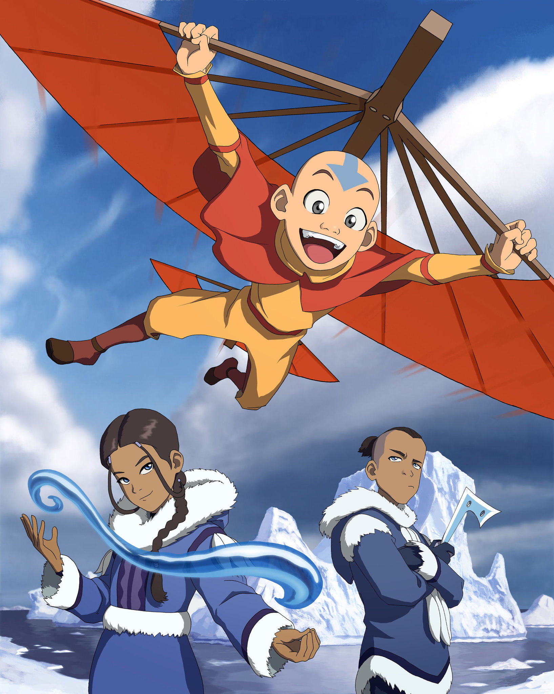
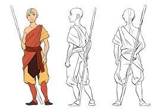
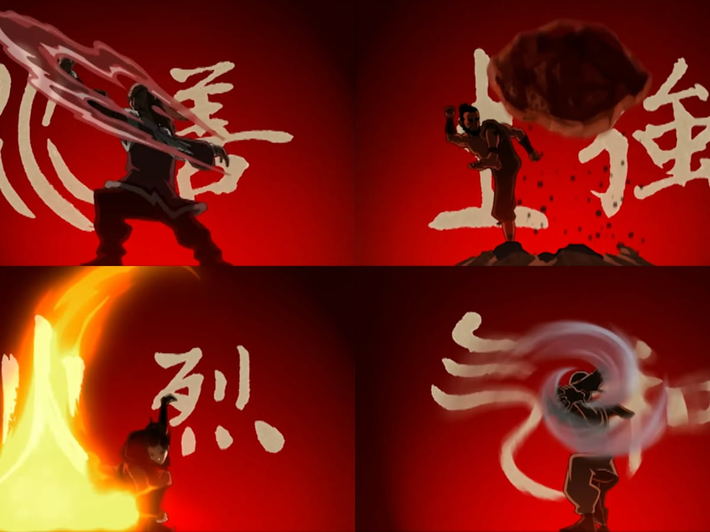

Show Synopsis

Avatar: The Last Airbender is an epic animated series that unfolds in a world divided into four elemental nations: Water, Earth, Fire, and Air. In this realm, some individuals possess the power to bend, or manipulate, their native element. However, one individual, known as the Avatar, has the unique ability to control all four elements, serving as the bridge between nations and the world's peacemaker.
The story follows Aang, the last surviving Airbender and the long-lost Avatar, as he awakens from a century-long slumber to a world engulfed in war. With the help of his friends Katara and Sokka, Aang embarks on a perilous journey to master the elements, confront the oppressive Fire Nation, and restore balance to the world. As they encounter new allies and formidable foes, the fate of humanity hangs in the balance, making "Avatar: The Last Airbender" a timeless tale of friendship, adventure, and the enduring struggle for harmony.
Production and Development

Avatar: The Last Airbender was created by Michael Dante DiMartino and Bryan Konietzko. The series emerged from their vision of a rich, culturally diverse world with a compelling narrative. Development involved meticulous world-building, drawing inspiration from various Asian cultures and mythologies to craft the show's unique universe.
DiMartino and Konietzko's dedication to storytelling excellence led to the creation of memorable characters and a captivating storyline. The show's success is a testament to their creative collaboration and their commitment to producing a series that resonated with audiences, combining elements of fantasy, adventure, and meaningful themes.
Characters and Abilities

The series features a diverse cast of characters, each with their unique personalities and backgrounds. Aang, the young Airbender and the last Avatar, leads the group. He is joined by Katara, a skilled Waterbender, and her brother Sokka, known for his resourcefulness. Together, they form a tight-knit team on a quest to restore balance to the world.
One of the central themes of the series is bending, the ability to manipulate one of the four elements: Water, Earth, Fire, and Air. Each nation has its own bending style, and individuals known as benders can harness their respective element's power. Aang, as the Avatar, possesses the rare ability to bend all four elements, making him a formidable force. Throughout their journey, the characters encounter various benders and non-benders, each contributing their unique skills and abilities to the group's adventures. This dynamic cast and the exploration of bending abilities add depth and excitement to the series.